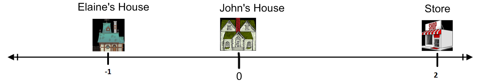
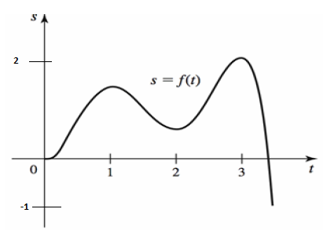

- (a)
- Describe the motion of John as precisely as you can.
- (b)
- When is John’s velocity zero? What is happening to John at those times?
- (c)
- When is John moving in the positive direction? When is John the furthest in the positive direction and the furthest in the negative direction?
- (d)
- When is John’s velocity increasing? And when is it decreasing? When is John going at maximum velocity?